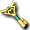

- 取得方式欄中的「製藥採集點」為以下地區
- 盧亞斯森林2、米魯里斯森林3、斯歐米森林3、魔界村森林2、魯克西翁森林2
盧亞斯
| 名稱 | 價格 | 限制 | 職業 | Wei | 取得方式 |
 摩斯錘 摩斯錘 | 500 | Lv0 | 戰修盜騎阿聖魔預吟 | 0 |  摩斯隊長(異次元) 摩斯隊長(異次元) |
| 能力 | 摩斯攻擊時使用的帶刺鐵球 |
| 備註 | [堆疊數：20] Q:摩斯鐵鍊 |
| 名稱 | 價格 | 限制 | 職業 | Wei | 取得方式 |
 霍羅帕 霍羅帕 | 10 | Lv0 | 戰修盜騎阿聖魔預吟 | 0 | 製藥採集點、 寶箱（深褐）、海灘衝刺:惡夜摩斯、海灘衝刺:摩斯隊長 寶箱（深褐）、海灘衝刺:惡夜摩斯、海灘衝刺:摩斯隊長 |
| 能力 | 任務道具、任務材料 |
| 備註 | [堆疊數：99] Q:製藥道具6格、Q:尋找治療材料、製藥材料 |
| 名稱 | 價格 | 限制 | 職業 | Wei | 取得方式 |
 賢者之葉 賢者之葉 | 10 | Lv0 | 戰修盜騎阿聖魔預吟 | 0 | 製藥採集點、普羅布[普羅布]、寶箱（深褐） |
| 能力 | 任務道具、任務材料 |
| 備註 | [堆疊數：99] Q:製藥道具6格、Q:尋找治療材料、製藥材料 |
| 名稱 | 價格 | 限制 | 職業 | Wei | 取得方式 |
| 封閉的箱子 | 10 | Lv0 | 戰修盜騎阿聖魔預吟 | 0 | Q:諾肯溜溜球 |
| 能力 | 任務道具、小戒指盒 |
| 備註 | [堆疊數：1]雙擊後會變成綠松石(任務道具)5個、翡翠(任務道具)5個、卡梅利安(任務道具)5個、縞瑪瑙(任務道具)5個。任務完成者以外的人雙擊也不會發生任何事 |
| 名稱 | 價格 | 限制 | 職業 | Wei | 取得方式 |
| 卡梅利安(任務道具) | 10 | Lv0 | 戰修盜騎阿聖魔預吟 | 0 | 點擊關閉的箱子 |
| 能力 | 任務道具 |
| 備註 | [堆疊數：99]Q:升級任務3、Q:升級任務10 |
| 名稱 | 價格 | 限制 | 職業 | Wei | 取得方式 |
 縞瑪瑙(任務道具) 縞瑪瑙(任務道具) | 10 | Lv0 | 戰修盜騎阿聖魔預吟 | 0 | 點擊關閉的箱子 |
| 能力 | 任務道具 |
| 備註 | [堆疊數：99] Q:梅雨之戒 |
| 名稱 | 價格 | 限制 | 職業 | Wei | 取得方式 |
 翡翠(任務道具) 翡翠(任務道具) | 10 | Lv0 | 戰修盜騎阿聖魔預吟 | 0 | 點擊關閉的箱子 |
| 能力 | 任務道具 |
| 備註 | [堆疊數：99] Q:升級任務4 |
| 名稱 | 價格 | 限制 | 職業 | Wei | 取得方式 |
 諾肯溜溜球 諾肯溜溜球 | 0 | Lv0 | 戰修盜騎阿聖魔預吟 | 0 | 尼克諾肯 |
| 能力 | 小孩的諾肯當作玩具的溜溜球，使用後會消耗並可用來攻擊 |
| 備註 | [堆疊數：1] Q:諾肯溜溜球 |
| 名稱 | 價格 | 限制 | 職業 | Wei | 取得方式 |
 金粉 金粉 | 3,000 | Lv0 | 戰修盜騎阿聖魔預吟 | 0 | 庫納[庫納]、 達伊特倫、 達伊特倫、 惡夜摩斯[惡夜摩斯]、 惡夜摩斯[惡夜摩斯]、 波恩騎士[波恩騎士]、 波恩騎士[波恩騎士]、 波特波特[波特波特]、 波特波特[波特波特]、 斯皮羅、波特 斯皮羅、波特 |
| 能力 | 金箔粉、神殿建設材料 |
| 備註 | [堆疊數：99]Q:瞬間移動捲軸、Q:瞬間移動捲軸、Q:黃金靴 |
| 名稱 | 價格 | 限制 | 職業 | Wei | 取得方式 |
 誓約書 誓約書 | 10 | Lv0 | 戰修盜騎阿聖魔預吟 | 0 | Q:商人聯盟結成 |
| 能力 | 寫有組合結成相關署名的書信 |
| 名稱 | 價格 | 限制 | 職業 | Wei | 取得方式 |
 諾肯特製蘭姆酒 諾肯特製蘭姆酒 | 10 | Lv1 | 戰修盜騎阿聖魔預吟 | 1 |  諾肯 諾肯 |
| 能力 | 被稱為人生最棒的水，也被稱為惡魔之水的液體 |
| 備註 | Q:脫離新手裝備3 |
| 名稱 | 價格 | 限制 | 職業 | Wei | 取得方式 |
 怪物圖鑑 怪物圖鑑 | 100,000 | Lv0 | 戰修盜騎阿聖魔預吟 | 1 | 盧亞斯：多克托爾 |
| 能力 | 雙擊並指定怪物變身捲軸，就能記錄到圖鑑中。但是必須是編號比最後記錄的更高的才行 |
| 備註 | Q:怪物圖鑑 |
| 名稱 | 價格 | 限制 | 職業 | Wei | 取得方式 |
 邁索西亞藥草學 邁索西亞藥草學 | 50,000 | Lv0 | 戰修盜騎阿聖魔預吟 | 1 | 盧亞斯：多克托爾 |
| 能力 | 雙擊並指定製藥道具，就能把道具記錄到圖鑑中。但是必須依照指定的順序 |
| 備註 | Q:製藥道具6格 |
| 名稱 | 價格 | 限制 | 職業 | Wei | 取得方式 |
 魔法杖 魔法杖 | 100 | Lv0 | 戰修盜騎阿聖魔預吟 | 0 | 盧亞斯：多克托爾 |
| 能力 | 以道具作為供品就能寄宿魔力的法杖。使用時需要充分注意 |
| 備註 | Q:神秘寶珠 |
 米魯里斯
米魯里斯
| 名稱 | 價格 | 限制 | 職業 | Wei | 取得方式 |
 證書 證書 | 10 | Lv0 | 戰修盜騎阿聖魔預吟 | 0 | Q:旅館預約、Q:旅館預約 |
| 能力 | 寫有旅館預約內容的信 |
| 名稱 | 價格 | 限制 | 職業 | Wei | 取得方式 |
| 旅館的鑰匙 | 10 | Lv0 | 戰修盜騎阿聖魔預吟 | 0 | Q:旅館預約、Q:旅館預約 |
| 能力 | 效果 |
| 名稱 | 價格 | 限制 | 職業 | Wei | 取得方式 |
 摩斯皮 摩斯皮 | 50 | Lv0 | 戰修盜騎阿聖魔預吟 | 0 |  摩斯、摩斯戰士[摩斯戰士]、摩斯骨衛、摩斯、寶箱（深褐） 摩斯、摩斯戰士[摩斯戰士]、摩斯骨衛、摩斯、寶箱（深褐） |
| 能力 | 效果 |
| 備註 | [堆疊數：99] Q:摩斯討伐、Q:準確手套、製藥材料 |
| 名稱 | 價格 | 限制 | 職業 | Wei | 取得方式 |
 諾肯藥草袋 諾肯藥草袋 | 10 | Lv0 | 戰修盜騎阿聖魔預吟 | 0 |  伐木諾肯 伐木諾肯 |
| 能力 | 體質藥水的材料 |
| 備註 | [堆疊數：99] Q:溫特安塔貢 |
| 名稱 | 價格 | 限制 | 職業 | Wei | 取得方式 |
 骨頭 骨頭 | 10 | Lv0 | 戰修盜騎阿聖魔預吟 | 0 |  河童（不再掉落了？）、 河童（不再掉落了？）、 哥布林 哥布林 |
| 能力 | 平凡無奇的白骨 |
| 備註 | [堆疊數：20] Q:皮塔的遺骨 |
| 名稱 | 價格 | 限制 | 職業 | Wei | 取得方式 |
| 皮塔的骸骨 | 10 | Lv0 | 戰修盜騎阿聖魔預吟 | 0 |  羅德哥布林 羅德哥布林 |
| 能力 | 不知是誰的頭蓋骨 |
| 備註 | [堆疊數：99] Q:皮塔的遺骨 |
| 名稱 | 價格 | 限制 | 職業 | Wei | 取得方式 |
 寶石箱 寶石箱 | 10 | Lv0 | 戰修盜騎阿聖魔預吟 | 0 | Q:皮塔的遺骨 |
| 能力 | 任務道具。漂亮的寶石箱，雙擊後會變成梅雨之戒 |
| 備註 | [堆疊數：1] |
| 名稱 | 價格 | 限制 | 職業 | Wei | 取得方式 |
 物品箱 物品箱 | 10 | Lv0 | 戰修盜騎阿聖魔預吟 | 0 | 伐木諾肯、米斯蒂 |
| 能力 | 被怪物搶走的物品箱 |
| 備註 | [堆疊數：1] Q:幫我找回物品箱 |
斯歐米
| 名稱 | 價格 | 限制 | 職業 | Wei | 取得方式 |
| 信紙 | 10 | Lv0 | 戰修盜騎阿聖魔預吟 | 0 | Q:送信 |
| 能力 | 斯歐米武器店的霍比寫給蕾絲蒂的信 |
| 名稱 | 價格 | 限制 | 職業 | Wei | 取得方式 |
 綠松石(任務道具) 綠松石(任務道具) | 10 | Lv0 | 戰修盜騎阿聖魔預吟 | 0 | 點擊關閉的箱子、波恩、寶箱（深褐） |
| 能力 | 任務道具 |
| 備註 | [堆疊數：99] Q:波恩討伐、Q:迎風耳環 |
| 名稱 | 價格 | 限制 | 職業 | Wei | 取得方式 |
| 諾肯螃蟹 | 10 | Lv0 | 戰修盜騎阿聖魔預吟 | 0 |  紐克諾肯[紐克諾肯] 紐克諾肯[紐克諾肯] |
| 能力 | 效果 |
| 備註 | [堆疊數：1] Q:諾肯魔法鎚 |
| 名稱 | 價格 | 限制 | 職業 | Wei | 取得方式 |
 迪斯湯 迪斯湯 | 10 | Lv0 | 戰修盜騎阿聖魔預吟 | 0 |  漢德諾肯 漢德諾肯 |
| 能力 | 迪斯熱水袋的材料 |
| 備註 | Q:迪斯熱水的功效、製藥材料 |
魔界村
| 名稱 | 價格 | 限制 | 職業 | Wei | 取得方式 |
 神秘之印 神秘之印 | Lv1 | 戰修盜騎阿聖魔預吟 | 1 | 百鬼夜行 | |
| 能力 | 使用後，可防止死亡時名聲經驗值減少 |
| 備註 | 不可轉讓 |
| 名稱 | 價格 | 限制 | 職業 | Wei | 取得方式 |
 牛肉 牛肉 | 10 | Lv1 | 戰修盜騎阿聖魔預吟 | 0 | 艾因格 |
| 能力 | 柔軟美味，而且據說有瘦身效果的珍貴食材 |
| 備註 | Q:脫離新手裝備2 |
| 名稱 | 價格 | 限制 | 職業 | Wei | 取得方式 |
 亞茲魔箱 亞茲魔箱 | 20 | Lv0 | 戰修盜騎阿聖魔預吟 | 0 |  惡魔僵屍 惡魔僵屍 |
| 能力 | 古代人的數字4，發動叛亂的亞茲魔的象徵 |
| 備註 | [堆疊數：99] 古代人的數字-階級社會 |
| 名稱 | 價格 | 限制 | 職業 | Wei | 取得方式 |
| 布朗尼口袋 | 10 | Lv0 | 戰修盜騎阿聖魔預吟 | 0 | 魔瓜[魔瓜] |
| 能力 | 效果 |
| 備註 | [堆疊數：5] Q:神祕的南瓜汁 |
| 名稱 | 價格 | 限制 | 職業 | Wei | 取得方式 |
 曼德拉水 曼德拉水 | 20 | Lv0 | 戰修盜騎阿聖魔預吟 | 0 | 貪婪三角龍、強大三角龍、貪婪蛋角龍、強大蛋角龍、貪婪天使角龍、強大天使角龍 |
| 能力 | 古代人的數字6。從魔瓜取得的水。交給薩卡(記載為夏莉)2個，就能得到1個神秘的液體(記載為精製水) |
| 備註 | Q:神秘的液體 |
魯克西翁
| 名稱 | 價格 | 限制 | 職業 | Wei | 取得方式 |
| 姬霖的家書 | 100 | Lv0 | 戰修盜騎阿聖魔預吟 | 0 | 埃舒亞克特氣球 |
| 能力 | 任務道具 |
| 備註 | Q:姬霖的家書 |
| 名稱 | 價格 | 限制 | 職業 | Wei | 取得方式 |
| 巨石之齒 | 20 | Lv0 | 戰修盜騎阿聖魔預吟 | 0 |  吉他手之猴［吉他手之猴］ 吉他手之猴［吉他手之猴］ |
| 能力 | 古代人的數字5，巨石的壞牙 |
| 備註 | [堆疊數：99] Q:古代人的數字-記號 |
| 名稱 | 價格 | 限制 | 職業 | Wei | 取得方式 |
 巨石花 巨石花 | 20 | Lv0 | 戰修盜騎阿聖魔預吟 | 0 | 拉蒂梅利亞 |
| 能力 | 古代人的數字5 |
| 備註 | [堆疊數：99] Q:古代人的數字-記號 |
| 名稱 | 價格 | 限制 | 職業 | Wei | 取得方式 |
 粉紅泡泡 粉紅泡泡 | 10 | Lv1 | 戰修盜騎阿聖魔預吟 | 1 | 克雷吉蒙布林格 |
| 能力 | 粉紅色的泡泡 |
| 備註 | [堆疊數10] Q:脫離新手！獲得腰帶 |
卡雷瓦拉
| 名稱 | 價格 | 限制 | 職業 | Wei | 取得方式 |
 討伐證明(銅) 討伐證明(銅) | 10 | Lv0 | 戰修盜騎阿聖魔預吟 | 0 | 緋紅摩斯、死亡艾亞格、惡夢中的艾莉絲 |
| 能力 | 討伐突變種怪物首領的證明 |
| 備註 | 集齊金銀銅可以移動到怪物城堡4 |
| 名稱 | 價格 | 限制 | 職業 | Wei | 取得方式 |
| 討伐證明(銀) | 10 | Lv0 | 戰修盜騎阿聖魔預吟 | 0 | 龍騎士 |
| 能力 | 討伐近戰最強的海馬「龍騎士」的證明 |
| 備註 | 集齊金銀銅可以移動到怪物城堡4 |
| 名稱 | 價格 | 限制 | 職業 | Wei | 取得方式 |
| 討伐證明(金) | 10 | Lv0 | 戰修盜騎阿聖魔預吟 | 0 | 死亡使者 |
| 能力 | 討伐怪物中魔力最強的海馬「死亡信使」的證明 |
| 備註 | 集齊金銀銅可以移動到怪物城堡4 |
| 名稱 | 價格 | 限制 | 職業 | Wei | 取得方式 |
 國王之心 國王之心 | 10 | Lv90FLv0 | 戰修盜騎阿聖魔預吟 | 0 | 微笑王 |
| 能力 | 「微笑王」的心臟。封印著過去激戰的記憶，使用後可習得職業專屬技能 |
| 備註 | [堆疊數：1] |
伊卡洛斯
| 名稱 | 價格 | 限制 | 職業 | Wei | 取得方式 |
 高品質水 高品質水 | 20 | Lv0 | 戰修盜騎阿聖魔預吟 | 0 | Q:神秘的液體 |
| 能力 | 將魔瓜水精製而成的神秘的液體 |
| 備註 | Q:古代人的數字-朋友 |
| 名稱 | 價格 | 限制 | 職業 | Wei | 取得方式 |
 金臼齒 金臼齒 | - | Lv0 | 戰修盜騎阿聖魔預吟 | 0 | 錢普斯米爾活動點數商店 |
| 能力 | 據說用於依卡魯斯成人禮的錢普斯米爾的臼齒 |
| 備註 | Q:協助依卡魯斯成人禮-1 Q:協助依卡魯斯成人禮-2、[不可放置地面] |
| 名稱 | 價格 | 限制 | 職業 | Wei | 取得方式 |
 來路不明的遺骨 來路不明的遺骨 | - | Lv0 | 戰修盜騎阿聖魔預吟 | 0 | 貪婪媽媽梅馬德活動點數商店 |
| 能力 | 貪婪媽媽梅馬德身上戴著的某人的遺骨 |
| 備註 | Q:柯爾努的憤怒-1 |
| 名稱 | 價格 | 限制 | 職業 | Wei | 取得方式 |
| 珍珠手環 | - | Lv0 | 戰修盜騎阿聖魔預吟 | 0 | 貪婪小梅馬德 |
| 能力 | 貪婪寶寶梅馬德喜歡的珍珠手環 |
| 備註 | Q:柯爾努的憤怒-2 |
| 名稱 | 價格 | 限制 | 職業 | Wei | 取得方式 |
 凱森的毛皮 凱森的毛皮 | - | Lv0 | 戰修盜騎阿聖魔預吟 | 0 | 凱松活動點數商店 |
| 能力 | 依卡魯斯的孩子們想要的毛皮 |
| 備註 | Q:依卡魯斯的孩子們-1、[不可放置地面] |
| 名稱 | 價格 | 限制 | 職業 | Wei | 取得方式 |
 解毒劑 解毒劑 | - | Lv0 | 戰修盜騎阿聖魔預吟 | 0 | 貪婪三角龍 |
| 能力 | 給孩子們的解毒劑 |
| 備註 | Q:依卡魯斯的孩子們-2、[不可放置地面] |
| 名稱 | 價格 | 限制 | 職業 | Wei | 取得方式 |
| 危險的液體 | - | Lv0 | 戰修盜騎阿聖魔預吟 | 0 | 小梅馬德 |
| 能力 | 寶寶梅馬德含在嘴裡的飲料。對人類來說是相當危險的液體。 |
| 備註 | Q:克魯戈的實驗-1 |
| 名稱 | 價格 | 限制 | 職業 | Wei | 取得方式 |
 庫爾戈的秘藥 庫爾戈的秘藥 | - | Lv0 | 戰修盜騎阿聖魔預吟 | 0 | 依卡魯斯:克魯戈 |
| 能力 | 克魯戈製作的秘藥。用在寶寶梅馬德身上試試吧。 |
| 備註 | Q:克魯戈的實驗-2 |
| 名稱 | 價格 | 限制 | 職業 | Wei | 取得方式 |
| 梅馬德人偶 | - | Lv0 | 戰修盜騎阿聖魔預吟 | 0 | 小梅馬德 |
| 能力 | 突然變成大人的寶寶梅馬德掉落的人偶。交給克魯戈吧。 |
| 備註 | Q:克魯戈的實驗-2 |
萊貝雅
| 名稱 | 價格 | 限制 | 職業 | Wei | 取得方式 |
 雪球 雪球 | 0 | Lv0 | 戰修盜騎聖魔預吟 | 1 | 徒手毆打萊貝雅鎮各處的雪山 |
| 能力 | 用於堆雪人和打雪仗 |
| 備註 | 製藥材料、Q:製作雪人、Q:製作雪人、Q:製作雪人、Q:製作雪人 |
| 名稱 | 價格 | 限制 | 職業 | Wei | 取得方式 |
 樹枝 樹枝 | 10 | Lv0 | 戰修盜騎聖魔預吟 | 1 | 製作雪球時偶爾取得 |
| 能力 | 雪人材料 |
| 備註 | [堆疊數：1] Q:製作雪人 |
| 名稱 | 價格 | 限制 | 職業 | Wei | 取得方式 |
| 尖帽 | 1,000 | Lv0 | 戰修盜騎聖魔預吟 | 1 | Q:沉重的借款 |
| 能力 | 雪人材料 |
| 備註 | Q:製作雪人 |
| 名稱 | 價格 | 限制 | 職業 | Wei | 取得方式 |
 水桶 水桶 | 1,000 | Lv0 | 戰修盜騎聖魔預吟 | 1 | 萊貝雅：雜貨店 |
| 能力 | 雪人材料 |
| 備註 | Q:製作雪人 |
| 名稱 | 價格 | 限制 | 職業 | Wei | 取得方式 |
| 毛茸茸帽子 | 1,000 | Lv0 | 戰修盜騎聖魔預吟 | 1 | 萊貝雅：雜貨店 |
| 能力 | 雪人材料 |
| 備註 | Q:製作雪人 |
| 名稱 | 價格 | 限制 | 職業 | Wei | 取得方式 |
 高禮帽 高禮帽 | 1,000 | Lv0 | 戰修盜騎聖魔預吟 | 1 | 萊貝雅：雜貨店 |
| 能力 | 雪人材料 |
| 備註 | Q:製作雪人 |
| 名稱 | 價格 | 限制 | 職業 | Wei | 取得方式 |
 食用色素18號 食用色素18號 | 1,000 | Lv0 | 戰修盜騎聖魔預吟 | 1 | 萊貝雅：雜貨店 |
| 能力 | 藍色的食用色素，是天然的所以沒有毒 |
| 備註 | Q:製作雪人棒棒糖 |
| 名稱 | 價格 | 限制 | 職業 | Wei | 取得方式 |
 銀之祭典曲[１號] 銀之祭典曲[１號] | 10 | Lv0 | 戰修盜騎聖魔預吟 | 1 | Q:銀之祭典曲 |
| 能力 | 分成8張紙片的銀之祭典曲樂譜紙片 |
| 名稱 | 價格 | 限制 | 職業 | Wei | 取得方式 |
| 銀之祭典曲[２號] | 10 | Lv0 | 戰修盜騎聖魔預吟 | 1 | Q:銀之祭典曲 |
| 能力 | 分成8張紙片的銀之祭典曲樂譜紙片 |
| 名稱 | 價格 | 限制 | 職業 | Wei | 取得方式 |
| 銀之祭典曲[３號] | 10 | Lv0 | 戰修盜騎聖魔預吟 | 1 | Q:銀之祭典曲 |
| 能力 | 分成8張紙片的銀之祭典曲樂譜紙片 |
| 名稱 | 價格 | 限制 | 職業 | Wei | 取得方式 |
| 銀之祭典曲[４號] | 10 | Lv0 | 戰修盜騎聖魔預吟 | 1 | Q:銀之祭典曲 |
| 能力 | 分成8張紙片的銀之祭典曲樂譜紙片 |
| 名稱 | 價格 | 限制 | 職業 | Wei | 取得方式 |
| 銀之祭典曲[５號] | 10 | Lv0 | 戰修盜騎聖魔預吟 | 1 | Q:銀之祭典曲 |
| 能力 | 分成8張紙片的銀之祭典曲樂譜紙片 |
| 名稱 | 價格 | 限制 | 職業 | Wei | 取得方式 |
| 銀之祭典曲[６號] | 10 | Lv0 | 戰修盜騎聖魔預吟 | 1 | Q:銀之祭典曲 |
| 能力 | 分成8張紙片的銀之祭典曲樂譜紙片 |
| 名稱 | 價格 | 限制 | 職業 | Wei | 取得方式 |
| 銀之祭典曲[７號] | 10 | Lv0 | 戰修盜騎聖魔預吟 | 1 | Q:銀之祭典曲 |
| 能力 | 分成8張紙片的銀之祭典曲樂譜紙片 |
| 備註 | Q:銀之祭典曲 |
| 名稱 | 價格 | 限制 | 職業 | Wei | 取得方式 |
| 銀之祭典曲[８號] | 10 | Lv0 | 戰修盜騎聖魔預吟 | 1 | Q:銀之祭典曲 |
| 能力 | 分成8張紙片的銀之祭典曲樂譜紙片 |
| 備註 | Q:銀之祭典曲 |
| 名稱 | 價格 | 限制 | 職業 | Wei | 取得方式 |
 銀鈴樂譜 銀鈴樂譜 | 10 | Lv0 | 戰修盜騎聖魔預吟 | 1 | Q:銀之祭典曲 |
| 能力 | 演奏聖誕頌歌「銀鈴」用的樂譜 |
| 備註 | Q:躍動之稚 |
| 名稱 | 價格 | 限制 | 職業 | Wei | 取得方式 |
 敲聖誕鼓的少年樂譜 敲聖誕鼓的少年樂譜 | 10 | Lv0 | 戰修盜騎聖魔預吟 | 1 | Q:躍動之稚 |
| 能力 | 演奏聖誕頌歌「敲鼓的少年」用的樂譜 |
| 備註 | [堆疊數：10] Q:雙屬性 插槽腰帶 |
| 名稱 | 價格 | 限制 | 職業 | Wei | 取得方式 |
| 百雪祇德樂譜 | 2,000,000 | Lv0 | 戰修盜騎聖魔預吟 | 1 | Q:百雪祇德樂譜 |
| 能力 | 演奏稱頌英雄成就的靈魂之歌「百雪祇德樂譜」用的樂譜 |
| 備註 | [堆疊數：1] Q:雙屬性光 插槽腰帶 |
| 名稱 | 價格 | 限制 | 職業 | Wei | 取得方式 |
 婚禮之歌樂譜 婚禮之歌樂譜 | 100,000 | Lv0 | 戰修盜騎聖魔預吟 | 1 | |
| 能力 | 把一生的回憶送給你・・・ |
| 備註 | [堆疊數：10] |
| 名稱 | 價格 | 限制 | 職業 | Wei | 取得方式 |
 方糖 方糖 | 10 | Lv0 | 戰修盜騎聖魔預吟 | 1 | 製作雪球時偶爾取得 |
| 能力 | 只在４月中旬出現完整的「甘甜之雪」結晶體 |
| 備註 | [堆疊數：10]Q:製作雪人棒棒糖、Q:修剪冰之樹、製藥材料 |
| 名稱 | 價格 | 限制 | 職業 | Wei | 取得方式 |
 藍色舒克法杖 藍色舒克法杖 | 100 | Lv0 | 戰修盜騎聖魔預吟 | 1 | Q:製作雪人棒棒糖 |
| 能力 | 用雪人冰鑽做成的萊貝雅特產糖果 |
| 備註 | Q:特製鯊魚帽、Q:通往稱號[饒舌大師TheMC]之路 |
| 名稱 | 價格 | 限制 | 職業 | Wei | 取得方式 |
| 梅札琳的皮革 | 10 | Lv0 | 戰修盜騎聖魔預吟 | 1 |  ［梅札琳］、梅札琳(黑)、梅札琳(紅) ［梅札琳］、梅札琳(黑)、梅札琳(紅) |
| 能力 | 麥查林企鵝的皮革 |
| 備註 | Q:雙屬性光 插槽腰帶 |
| 名稱 | 價格 | 限制 | 職業 | Wei | 取得方式 |
| 冰角 | 10 | Lv0 | 戰修盜騎聖魔預吟 | 1 | ［策皮拉］、策皮拉(黑)、策皮拉(紅) |
| 能力 | 托皮拉馴鹿的角 |
| 備註 | Q:雙屬性光 插槽腰帶 |
| 名稱 | 價格 | 限制 | 職業 | Wei | 取得方式 |
 歐爾哈奈爾 歐爾哈奈爾 | 10 | Lv0 | 戰修盜騎聖魔預吟 | 1 |  ［布羅尼］、布羅尼(紅)、布羅尼(綠) ［布羅尼］、布羅尼(紅)、布羅尼(綠) |
| 能力 | 熊布羅尼的爪 |
| 備註 | Q:雙屬性光 插槽腰帶、Q:火之月 |
| 名稱 | 價格 | 限制 | 職業 | Wei | 取得方式 |
 魔法兔耳材料 魔法兔耳材料 | 100 | Lv0 | 戰修盜騎聖魔預吟 | 0 | Q:迷宮遊戲 |
| 能力 | 魔法兔耳的材料。將魔法兔耳材料5個與兔耳朵5個合成，可以製作魔法兔耳1個 |
| 備註 | [堆疊數：5]、[不可放置地面] |
| 名稱 | 價格 | 限制 | 職業 | Wei | 取得方式 |
 魔法糖果髮帶材料 魔法糖果髮帶材料 | 100 | Lv0 | 戰修盜騎聖魔預吟 | 0 | Q:迷宮遊戲 |
| 能力 | 魔法糖果髮帶的材料。將魔法糖果髮帶材料5個與糖果髮帶5個合成，可以製作魔法糖果髮帶1個。 |
| 備註 | [堆疊數：5]、[不可放置地面] |
溫特安塔貢製作共 49 件，例如：割皮剪刀與尼龍、毛皮A、冬季帽、迪斯眼珠…
溫特安塔貢製作共 49 件，例如：割皮剪刀與尼龍、毛皮A、冬季帽、迪斯眼珠…
火焰武器
| 名稱 | 價格 | 限制 | 職業 | Wei | 取得方式 |
 結冰的魯西 結冰的魯西 | 10 | Lv0 | 戰修盜騎阿聖魔預吟 | 1 | 敲打阿德里文1～4F的柱子 |
| 能力 | 凍結的夜光蟲，收集幾個就會變成火之晶 |
| 備註 | [堆疊數：99] Q:火之月、製藥材料 |
| 名稱 | 價格 | 限制 | 職業 | Wei | 取得方式 |
 月光寧 月光寧 | 10 | Lv0 | 戰修盜騎阿聖魔預吟 | 1 | 敲打阿德里文1～4F的柱子、格蘭德派斯［格蘭德派斯］ |
| 能力 | 火之精靈之一，收集幾個就會變成火之燭 |
| 備註 | [堆疊數：99] Q:火之月 |
| 名稱 | 價格 | 限制 | 職業 | Wei | 取得方式 |
 氣 氣 | 10 | Lv0 | 戰修盜騎阿聖魔預吟 | 1 |  冰霜貴族(冰之城) 冰霜貴族(冰之城) |
| 能力 | 吹出地獄寒氣卻燃燒著的魔法蠟燭 |
| 備註 | Q:火之月 |
| 名稱 | 價格 | 限制 | 職業 | Wei | 取得方式 |
 氣月光寧 氣月光寧 | 10 | Lv0 | 戰修盜騎阿聖魔預吟 | 1 | Q:火之月 |
| 能力 | 火之晶進化後的型態，收集幾個就會變成火之月 |
| 名稱 | 價格 | 限制 | 職業 | Wei | 取得方式 |
 火焰月光 火焰月光 | 10 | Lv0 | 戰修盜騎阿聖魔預吟 | 1 | Q:火之月 |
| 能力 | 熊熊燃燒的火之精靈石 |
| 備註 | Q:火焰武器 |
| 名稱 | 價格 | 限制 | 職業 | Wei | 取得方式 |
| 戰士的伊索尼亞 | 10 | Lv0 | 戰修盜騎阿聖魔預吟 | 1 |  雪魔劍士(藍)、雪魔劍士(黃)、 雪魔劍士(藍)、雪魔劍士(黃)、 雪魔槍兵(紅)、雪魔槍兵(黃) 雪魔槍兵(紅)、雪魔槍兵(黃) |
| 能力 | 與火之精靈並肩作戰的勇士們的記錄，包含龍燄劍的製作方法。只有萊貝雅武具店的鐵匠能解析其祕密 |
| 備註 | Q:火焰武器 |
| 名稱 | 價格 | 限制 | 職業 | Wei | 取得方式 |
| 修道士的伊索尼亞 | 10 | Lv0 | 戰修盜騎阿聖魔預吟 | 1 | 雪魔劍士(藍)、雪魔劍士(黃)、雪魔槍兵(紅)、雪魔槍兵(黃) |
| 能力 | 與火之精靈並肩作戰的勇士們的記錄，包含龍燄爪的製作方法。只有萊貝雅武具店的鐵匠能解析其祕密 |
| 備註 | Q:火焰武器 |
| 名稱 | 價格 | 限制 | 職業 | Wei | 取得方式 |
| 盜賊的伊索尼亞 | 10 | Lv0 | 戰修盜騎阿聖魔預吟 | 1 | 雪魔劍士(藍)、雪魔劍士(黃)、雪魔槍兵(紅)、雪魔槍兵(黃) |
| 能力 | 與火之精靈並肩作戰的勇士們的記錄，包含龍牙刀的製作方法。只有萊貝雅武具店的鐵匠能解析其祕密 |
| 備註 | Q:火焰武器 |
| 名稱 | 價格 | 限制 | 職業 | Wei | 取得方式 |
| 聖職者的伊索尼亞 | 10 | Lv0 | 戰修盜騎阿聖魔預吟 | 1 | 雪魔劍士(藍)、雪魔劍士(黃)、雪魔槍兵(紅)、雪魔槍兵(黃) |
| 能力 | 與火之精靈並肩作戰的勇士們的記錄，包含龍翼杖(雙手)的製作方法。只有萊貝雅武具店的鐵匠能解析其祕密 |
| 備註 | Q:火焰武器 |
| 名稱 | 價格 | 限制 | 職業 | Wei | 取得方式 |
| 魔術師的伊索妮亞 | 10 | Lv0 | 戰修盜騎阿聖魔預吟 | 1 | 雪魔劍士(藍)、雪魔劍士(黃)、雪魔槍兵(紅)、雪魔槍兵(黃) |
| 能力 | 與火之精靈並肩作戰的勇士們的記錄，包含燄龍珠(雙手)的製作方法。只有萊貝雅武具店的鐵匠能解析其祕密 |
| 備註 | Q:火焰武器 |
| 名稱 | 價格 | 限制 | 職業 | Wei | 取得方式 |
 預言者的伊索尼亞 預言者的伊索尼亞 | 10 | Lv0 | 戰修盜騎阿聖魔預吟 | 1 | [雪魔劍士] |
| 能力 | 與火之精靈並肩作戰的勇士們的記錄，包含龍燄雙刃的製作方法。只有萊貝雅武具店的鐵匠能解析其祕密 |
| 備註 | Q:火焰武器 |
| 名稱 | 價格 | 限制 | 職業 | Wei | 取得方式 |
| 騎士的伊索尼亞 | 10 | Lv0 | 戰修盜騎阿聖魔預吟 | 1 | 雪魔劍士(藍)、雪魔劍士(黃)、雪魔槍兵(紅)、雪魔槍兵(黃) |
| 能力 | 與火之精靈並肩作戰的勇士們的記錄，包含燄龍之尾(單手)的製作方法。只有萊貝雅武具店的鐵匠能解析其祕密 |
| 備註 | Q:火焰武器 |
| 名稱 | 價格 | 限制 | 職業 | Wei | 取得方式 |
| 吟遊詩人的伊索尼亞 | 10 | Lv0 | 戰修盜騎阿聖魔預吟 | 1 | 雪魔劍士(藍)、雪魔劍士(黃)、雪魔槍兵(紅)、雪魔槍兵(黃) |
| 能力 | 與火之精靈並肩作戰的勇士們的記錄，包含燄之天琴(雙手)的製作方法。只有萊貝雅武具店的鐵匠能解析其祕密 |
| 備註 | Q:火焰武器 |
| 名稱 | 價格 | 限制 | 職業 | Wei | 取得方式 |
| 阿修羅的伊索尼亞 | 10 | Lv0 | 戰修盜騎阿聖魔預吟 | 1 | |
| 能力 | 與火之精靈並肩作戰的勇士們的記錄，包含龍燄奇雷克的製作方法。只有萊貝雅武具店的鐵匠能解析其祕密 |
| 備註 | Q:火焰武器 |
| 名稱 | 價格 | 限制 | 職業 | Wei | 取得方式 |
 劍魂 劍魂 | 10 | Lv0 | 戰修盜騎阿聖魔預吟 | 1 | ［雪魔劍士］、雪魔劍士(藍) |
| 能力 | 火焰武器的材料 |
| 備註 | Q:火焰武器 |
| 名稱 | 價格 | 限制 | 職業 | Wei | 取得方式 |
 拳套之魂 拳套之魂 | 10 | Lv0 | 戰修盜騎阿聖魔預吟 | 1 | 雪魔劍士(黃) |
| 能力 | 火焰武器的材料 |
| 備註 | Q:火焰武器 |
| 名稱 | 價格 | 限制 | 職業 | Wei | 取得方式 |
 短劍暗影 短劍暗影 | 10 | Lv0 | 戰修盜騎阿聖魔預吟 | 1 | 雪魔劍士(藍) |
| 能力 | 火焰武器的材料 |
| 備註 | Q:火焰武器 |
| 名稱 | 價格 | 限制 | 職業 | Wei | 取得方式 |
 神聖扳手 神聖扳手 | 10 | Lv0 | 戰修盜騎阿聖魔預吟 | 1 | 雪魔槍兵(黃) |
| 能力 | 火焰武器的材料 |
| 備註 | Q:火焰武器 |
| 名稱 | 價格 | 限制 | 職業 | Wei | 取得方式 |
 荷普利 荷普利 | 10 | Lv0 | 戰修盜騎阿聖魔預吟 | 1 | ［弗里克爾］、弗里克爾(藍)、弗里克爾(紅) |
| 能力 | 火焰武器的材料 |
| 備註 | Q:火焰武器 |
| 名稱 | 價格 | 限制 | 職業 | Wei | 取得方式 |
 劍卡之淚 劍卡之淚 | 10 | Lv0 | 戰修盜騎阿聖魔預吟 | 1 | 雪魔槍兵(黃)、雪魔劍士(藍) |
| 能力 | 火焰武器的材料 |
| 備註 | Q:火焰武器 |
| 名稱 | 價格 | 限制 | 職業 | Wei | 取得方式 |
 槍魂 槍魂 | 10 | Lv0 | 戰修盜騎阿聖魔預吟 | 1 | ［雪魔槍兵］、雪魔劍士(藍) |
| 能力 | 火焰武器的材料 |
| 備註 | Q:火焰武器 |
| 名稱 | 價格 | 限制 | 職業 | Wei | 取得方式 |
 謝耳曼箴言 謝耳曼箴言 | 10 | Lv0 | 戰修盜騎阿聖魔預吟 | 1 | 雪魔槍兵(紅) |
| 能力 | 火焰武器的材料 |
| 備註 | Q:火焰武器 |
| 名稱 | 價格 | 限制 | 職業 | Wei | 取得方式 |
 彎刀之源 彎刀之源 | 10 | Lv0 | 戰修盜騎阿聖魔預吟 | 1 | 雪魔槍兵(紅)、雪魔劍士(藍)、[雪魔劍士] |
| 能力 | 火焰武器的材料 |
| 備註 | Q:火焰武器 |
艾德安德
| 名稱 | 價格 | 限制 | 職業 | Wei | 取得方式 |
 冰石 冰石 | 10 | Lv0 | 戰修盜騎阿聖魔預吟 | 0 | 冰塊 |
| 能力 | 帶著寒氣的石頭 |
| 備註 | Q:守護者的最愛-1、Q:守護者的最愛-2 |
| 名稱 | 價格 | 限制 | 職業 | Wei | 取得方式 |
| 艾德安西斯特卡 | Lv0 | 戰修盜騎阿聖魔預吟 | 1 | 隧道發掘隊長 | |
| 能力 | ※基礎HP＋5 |
| 備註 | Q:艾德領主地下的挖掘 |
| 名稱 | 價格 | 限制 | 職業 | Wei | 取得方式 |
| 古代預言者的遺產1 | Lv0 | 戰修盜騎阿聖魔預吟 | 1 | 英雄的墓碑 | |
| 能力 | 預言者祖先的遺產。托爾蒙的尋找之物 |
| 備註 | Q:昔日英雄的遺產 |
| 名稱 | 價格 | 限制 | 職業 | Wei | 取得方式 |
| 古代預言者的占術卡 | Lv0 | 戰修盜騎阿聖魔預吟 | 1 |  艾德領主 艾德領主 | |
| 能力 | 預言者祖先的遺產。占術卡。這樣無法使用。 |
| 備註 | [堆疊數：20]、Q:失去主人的魔像處理、Q:古代預言者的占術卡 |
| 名稱 | 價格 | 限制 | 職業 | Wei | 取得方式 |
 莎曼娜的特製料理 莎曼娜的特製料理 | 10 | Lv0 | 戰修盜騎阿聖魔預吟 | 1 | 莎曼娜 |
| 能力 | MAX HP+150/MAX MP+50 60分鐘 |
| 備註 | Q:艾德安德旅館的布穀鳥鐘 |
艾娜花園
| 名稱 | 價格 | 限制 | 職業 | Wei | 取得方式 |
| 霍布里克 | 10 | Lv0 | 戰修盜騎阿聖魔預吟 | 1 | 艾米斯馬凱拉 |
| 能力 | 古老掃帚中寄宿的灰塵精靈 |
| 備註 | Q:修剪冰之樹、製藥材料 |
| 名稱 | 價格 | 限制 | 職業 | Wei | 取得方式 |
 冰剪刀 冰剪刀 | 10 | Lv0 | 戰修盜騎阿聖魔預吟 | 1 | 艾娜花園的門衛 |
| 能力 | 用於修剪艾娜花園的冰之樹 |
| 備註 | Q:修剪冰之樹 |
| 名稱 | 價格 | 限制 | 職業 | Wei | 取得方式 |
 冰果實 冰果實 | 10 | Lv0 | 戰修盜騎阿聖魔預吟 | 1 | Q:修剪冰之樹、冰塊(綠)、 米拉克巴克斯(紅) 米拉克巴克斯(紅) |
| 能力 | 布羅尼最愛的東西。使用後恢復HP 300。 |
| 備註 | Q:冰石-伊司托娜、製藥材料、天上界無法使用 |
| 名稱 | 價格 | 限制 | 職業 | Wei | 取得方式 |
 舊硬幣 舊硬幣 | 10 | Lv0 | 戰修盜騎阿聖魔預吟 | 1 | 冰塊(紫)、冰塊(藍)、［伊克拉斯］、米拉克巴克斯(灰)、米拉克巴克斯(淺綠) |
| 能力 | 老舊到已經無法在邁索西亞使用的硬幣 |
| 備註 | Q:舊硬幣 |
| 名稱 | 價格 | 限制 | 職業 | Wei | 取得方式 |
| 銅幣 | 10 | Lv0 | 戰修盜騎阿聖魔預吟 | 1 | Q:舊硬幣 |
| 能力 | 銅幣。投進艾娜花園的噴泉的話・・・！？ |
| 名稱 | 價格 | 限制 | 職業 | Wei | 取得方式 |
 銀幣 銀幣 | 10 | Lv0 | 戰修盜騎阿聖魔預吟 | 1 | Q:舊硬幣 |
| 能力 | 銀幣。投進艾娜花園的噴泉的話・・・！？ |
| 名稱 | 價格 | 限制 | 職業 | Wei | 取得方式 |
 金幣 金幣 | 10 | Lv0 | 戰修盜騎阿聖魔預吟 | 1 | Q:舊硬幣 |
| 能力 | 金幣。投進艾娜花園的噴泉的話・・・！？ |
| 備註 | Q:舊硬幣 |
| 名稱 | 價格 | 限制 | 職業 | Wei | 取得方式 |
 靈魂印記 靈魂印記 | 10 | Lv0 | 戰修盜騎阿聖魔預吟 | 0 | Q:善惡決定 |
| 能力 | 接受善・惡洗禮者所擁有的、登上天上界的資格 |
| 備註 | 不可轉讓・不可存銀行初次討伐女王後，決定善惡時取得。 Q:女王討伐 |
 托納爾的證明
托納爾的證明
| 名稱 | 價格 | 限制 | 職業 | Wei | 取得方式 |
 不明的石塊 不明的石塊 | 10 | Lv0 | 戰修盜騎阿聖魔預吟 | 1 | Q:冰石-伊司托娜 |
| 能力 | 效果 |
| 名稱 | 價格 | 限制 | 職業 | Wei | 取得方式 |
 伊司托娜精煉書 伊司托娜精煉書 | 10 | Lv0 | 戰修盜騎阿聖魔預吟 | 1 | 卡雷瓦拉雜貨店:梅迪姆 |
| 能力 | 記載著伊司托娜精鍊法的古老魔導書 |
| 備註 | Q:冰石-伊司托娜 |
| 名稱 | 價格 | 限制 | 職業 | Wei | 取得方式 |
| 伊瑟托納 | 10 | Lv0 | 戰修盜騎阿聖魔預吟 | 1 | Q:冰石-伊司托娜 |
| 能力 | 石之托納爾打破第一塊冰時的碎片，連火也無法融化 |
| 備註 | Q:雪花貝隆布魯、Q:雪花貝隆布魯購買、Q:托納爾的證明 |
| 名稱 | 價格 | 限制 | 職業 | Wei | 取得方式 |
| 艾格拉皮斯 | 10 | Lv0 | 戰修盜騎阿聖魔預吟 | 1 | 露台：［幽靈弗里克爾］、米拉克巴克斯(紅) |
| 能力 | 鳥之托納爾艾格拉菲斯的紋章 |
| 備註 | Q:雪花貝隆布魯、Q:雪花貝隆布魯購買 |
| 名稱 | 價格 | 限制 | 職業 | Wei | 取得方式 |
| 維隆藍 | 10 | Lv0 | 戰修盜騎阿聖魔預吟 | 1 | Q:雪花貝隆布魯、Q:雪花貝隆布魯購買 |
| 能力 | 生長在受到人之托納爾庇佑之處的雪花 |
| 備註 | Q:托納爾的證明 |
| 名稱 | 價格 | 限制 | 職業 | Wei | 取得方式 |
| 阿多爾帕烏德 | 10 | Lv0 | 戰修盜騎阿聖魔預吟 | Q:阿多爾帕烏德 | |
| 能力 | 卡雷瓦拉的魔女之間代代相傳的祕密粉末 |
| 備註 | Q:魔法燒瓶 |
| 名稱 | 價格 | 限制 | 職業 | Wei | 取得方式 |
 絕對真空水瓶 絕對真空水瓶 | 10 | Lv0 | 戰修盜騎阿聖魔預吟 | 1 | Q:絕對真空水瓶 |
| 能力 | 魯克西翁的盜賊們的祕藏寶物 |
| 備註 | Q:古代魔法書魔法燒瓶製造法、Q:魔法燒瓶 |
| 名稱 | 價格 | 限制 | 職業 | Wei | 取得方式 |
| 魔法燒瓶製造法 | 10 | Lv0 | 戰修盜騎阿聖魔預吟 | 1 | Q:古代魔法書魔法燒瓶製造法 |
| 能力 | 記載著魔法燒瓶製造法的古老魔導書 |
| 備註 | Q:魔法燒瓶 |
| 名稱 | 價格 | 限制 | 職業 | Wei | 取得方式 |
 魔法燒瓶 魔法燒瓶 | 10 | Lv0 | 戰修盜騎阿聖魔預吟 | 1 | Q:魔法燒瓶 |
| 能力 | 唯一可以裝入某種特別之物的容器 |
| 備註 | Q:古代魔法書魔法燒瓶製造法、Q:米拉貝萊姆 |
| 名稱 | 價格 | 限制 | 職業 | Wei | 取得方式 |
 米拉貝萊姆 米拉貝萊姆 | 10 | Lv0 | 戰修盜騎阿聖魔預吟 | 1 | Q:米拉貝萊姆 |
| 能力 | 安妮莉西亞・米拉貝爾犧牲自己所創造出的感情精髓 |
| 備註 | Q:雪花貝隆布魯購買、Q:托納爾的證明 |
| 名稱 | 價格 | 限制 | 職業 | Wei | 取得方式 |
| 托納爾的證明 | 10 | Lv0 | 戰修盜騎阿聖魔預吟 | 1 | Q:托納爾的證明 |
| 能力 | 分為石、鳥、人的尼布爾蘭守護靈的庇佑之證 |
| 備註 | Q:女王討伐 |
交流廣場
極限武器
- 礦石
- 金屬錠
- 合金
 寶石
寶石
| 名稱 | 價格 | 限制 | 職業 | Wei | 取得方式 |
 木頭 木頭 | Lv0 | 戰修盜騎阿聖魔預吟 | 0 |  隨機彩券、童話夢魘2 隨機彩券、童話夢魘2 | |
| 能力 | 效果： |
| 備註 | Q:極限武器 |
| 名稱 | 價格 | 限制 | 職業 | Wei | 取得方式 |
 木板 木板 | Lv0 | 戰修盜騎阿聖魔預吟 | 0 | | |
| 能力 | 效果： |
| 備註 | Q:極限武器 可放置地面、可交易。 |
| 名稱 | 價格 | 限制 | 職業 | Wei | 取得方式 |
 石頭 石頭 | Lv0 | 戰修盜騎阿聖魔預吟 | 0 | 隨機彩券 | |
| 能力 | 效果： |
| 備註 | Q:極限武器 |
| 名稱 | 價格 | 限制 | 職業 | Wei | 取得方式 |
| 石斧刃 | Lv0 | 戰修盜騎阿聖魔預吟 | 0 | | |
| 能力 | 效果： |
| 備註 | Q:極限武器 |
| 名稱 | 價格 | 限制 | 職業 | Wei | 取得方式 |
 木棒 木棒 | Lv0 | 戰修盜騎阿聖魔預吟 | 0 | | |
| 能力 | 效果： |
| 備註 | Q:極限武器 |
| 名稱 | 價格 | 限制 | 職業 | Wei | 取得方式 |
 木棍棒 木棍棒 | Lv0 | 戰修盜騎阿聖魔預吟 | 0 | | |
| 能力 | 效果： |
| 備註 | Q:極限武器 可放置地面、可交易。 |
| 名稱 | 價格 | 限制 | 職業 | Wei | 取得方式 |
| 怪物的表皮 | Lv0 | 戰修盜騎阿聖魔預吟 | 0 | | |
| 能力 | 效果： |
| 備註 | Q:極限武器 |
| 名稱 | 價格 | 限制 | 職業 | Wei | 取得方式 |
| 裝飾皮革 | Lv0 | 戰修盜騎阿聖魔預吟 | 0 | | |
| 能力 | 效果： |
| 備註 | Q:極限武器 可放置地面、不可交易。 |
| 名稱 | 價格 | 限制 | 職業 | Wei | 取得方式 |
 奇妙的尾巴 奇妙的尾巴 | Lv0 | 戰修盜騎阿聖魔預吟 | 0 | | |
| 能力 | 效果： |
| 備註 | Q:極限武器 |
| 名稱 | 價格 | 限制 | 職業 | Wei | 取得方式 |
 皮繩 皮繩 | Lv0 | 戰修盜騎阿聖魔預吟 | 0 | | |
| 能力 | 效果： |
| 備註 | Q:極限武器 可放置地面、不可交易。 |
| 名稱 | 價格 | 限制 | 職業 | Wei | 取得方式 |
 獸皮 獸皮 | Lv0 | 戰修盜騎阿聖魔預吟 | 0 | | |
| 能力 | 效果： |
| 備註 | Q:極限武器 |
| 名稱 | 價格 | 限制 | 職業 | Wei | 取得方式 |
 硬皮革 硬皮革 | Lv0 | 戰修盜騎阿聖魔預吟 | 0 | | |
| 能力 | 效果： |
| 備註 | Q:極限武器 |
| 名稱 | 價格 | 限制 | 職業 | Wei | 取得方式 |
 怪物的血液 怪物的血液 | Lv0 | 戰修盜騎阿聖魔預吟 | 0 | | |
| 能力 | 效果： |
| 備註 | [堆疊數：20]Q:極限武器 |
| 名稱 | 價格 | 限制 | 職業 | Wei | 取得方式 |
 接合劑 接合劑 | Lv0 | 戰修盜騎阿聖魔預吟 | 0 | | |
| 能力 | 效果： |
| 備註 | Q:極限武器 可放置地面、不可交易。 |
寇斯莫弗莉亞
盧米納
| 名稱 | 價格 | 限制 | 職業 | Wei | 取得方式 |
 爬行貝的肉 爬行貝的肉 | 10 | Lv1 | 戰修盜騎阿聖魔預吟 | 1 |  爬行貝[爬行貝] 爬行貝[爬行貝] |
| 能力 | 爬行貝的肉 |
| 備註 | 掉在地上的東西無法回收 |
| 名稱 | 價格 | 限制 | 職業 | Wei | 取得方式 |
 卡皮歐的腳 卡皮歐的腳 | 10 | Lv1 | 戰修盜騎阿聖魔預吟 | 1 |  卡皮歐 卡皮歐 |
| 能力 | 卡皮歐的腳 |
| 備註 | 掉在地上的東西無法回收 Q:卡皮歐的腳 |
| 名稱 | 價格 | 限制 | 職業 | Wei | 取得方式 |
| 烏修萊茵之燈 | 10 | Lv1 | 戰修盜騎阿聖魔預吟 | 1 | [烏爾修萊茵] |
| 能力 | 烏修萊茵藏身的燈 |
| 備註 | 掉在地上的東西無法回收 |
| 名稱 | 價格 | 限制 | 職業 | Wei | 取得方式 |
| 露米娜聖經 | 10 | Lv1 | 戰修盜騎阿聖魔預吟 | 1 |  帕斯托爾[帕斯托爾] 帕斯托爾[帕斯托爾] |
| 能力 | 帕斯托爾的聖經。小心易碎！ |
| 備註 | 掉在地上的東西無法回收 |
| 名稱 | 價格 | 限制 | 職業 | Wei | 取得方式 |
| 海因克爾的信封 | 10 | Lv1 | 戰修盜騎阿聖魔預吟 | 1 | 任務 |
| 能力 | 不知道寫了什麼的信封 |
| 備註 | 掉在地上的東西無法回收 |
| 名稱 | 價格 | 限制 | 職業 | Wei | 取得方式 |
 盧米納神殿的右鑰匙 盧米納神殿的右鑰匙 | 10 | Lv1 | 戰修盜騎阿聖魔預吟 | 1 | 右將軍 |
| 能力 | 右將軍持有的鑰匙 |
| 備註 | 掉在地上的東西無法回收 |
| 名稱 | 價格 | 限制 | 職業 | Wei | 取得方式 |
| 盧米納神殿的左鑰匙 | 10 | Lv1 | 戰修盜騎阿聖魔預吟 | 1 | 左將軍 |
| 能力 | 左將軍持有的鑰匙 |
| 備註 | 掉在地上的東西無法回收 |
| 名稱 | 價格 | 限制 | 職業 | Wei | 取得方式 |
 露米娜神殿之鑰 | 10 | Lv1 | 戰修盜騎阿聖魔預吟 | 1 | 任務 |
| 能力 | 能夠開啟盧米納神殿大門的鑰匙。 |
| 名稱 | 價格 | 限制 | 職業 | Wei | 取得方式 |
| 阿瑟拉的信 | 10 | Lv1 | 戰修盜騎阿聖魔預吟 | 1 | 任務 |
| 能力 | 阿瑟拉寫給懷念的朋友赫爾克里布的信 |
| 備註 | 掉在地上的東西無法回收 |
| 名稱 | 價格 | 限制 | 職業 | Wei | 取得方式 |
 格亨納墜飾 格亨納墜飾 | 1,000 | Lv91VLv1TLv1 | 戰修盜騎聖魔吟 | 1 | 任務 |
| 能力 | 持有在道具欄中時，物理傷害減少3%、魔法傷害減少2%。 |
| 備註 | 注意這不是裝備。不可賣給商店、不可存銀行、不可移到大背包。從取得的瞬間起會強制佔用1格道具欄。2006年12月現在，似乎如標示所述尚未實裝。 |
蓋赫那
| 名稱 | 價格 | 限制 | 職業 | Wei | 取得方式 |
 泥塊 泥塊 | - | Lv1 | 戰修盜騎阿聖魔預吟 | 1 |  泥人 泥人 |
| 能力 | 泥人身上掉出的泥巴 |
| 備註 | 掉在地上的東西無法回收 |
| 名稱 | 價格 | 限制 | 職業 | Wei | 取得方式 |
| 模式記錄書 | - | Lv1 | 戰修盜騎阿聖魔預吟 | 1 |  地獄三頭犬 地獄三頭犬 |
| 能力 | 記載著地獄三頭犬行動模式的手冊 |
| 備註 | 掉在地上的東西無法回收 |
| 名稱 | 價格 | 限制 | 職業 | Wei | 取得方式 |
 骷髏靈魂石 骷髏靈魂石 | - | Lv1 | 戰修盜騎阿聖魔預吟 | 1 |  骷髏守衛、骷髏大師、骷髏騎士 骷髏守衛、骷髏大師、骷髏騎士 |
| 能力 | 骷髏的靈魂 |
| 備註 | 掉在地上的東西無法回收 |
| 名稱 | 價格 | 限制 | 職業 | Wei | 取得方式 |
| 格亨納監獄記錄日誌 | - | Lv1 | 戰修盜騎阿聖魔預吟 | 1 |  黑暗賢者 黑暗賢者 |
| 能力 | 記錄著被關進格亨納的人名的手冊 |
| 備註 | 掉在地上的東西無法回收 |
德爾克雷比斯
| 名稱 | 價格 | 限制 | 職業 | Wei | 取得方式 |
 黑曜石 黑曜石 | Lv0 | 戰修盜騎阿聖魔預吟 | 0 |  絨毛鼠、帕爾塞斯7、斯坎達倫7、歐佩爾6・歐佩爾7、克修倫6・克修倫7、活動點數商店 絨毛鼠、帕爾塞斯7、斯坎達倫7、歐佩爾6・歐佩爾7、克修倫6・克修倫7、活動點數商店 | |
| 能力 | 石材。製造時使用。 |
| 備註 | [堆疊數：20] Q:德爾克雷比斯入場任務 |
| 名稱 | 價格 | 限制 | 職業 | Wei | 取得方式 |
 星藍寶石 星藍寶石 | Lv0 | 戰修盜騎阿聖魔預吟 | 0 | 帕爾塞斯7、斯坎達倫7、歐佩爾6・歐佩爾7、克修倫6・克修倫7 | |
| 能力 | 寶石的材料。製造時使用。 |
| 備註 | [堆疊數：20] Q:德爾克雷比斯入場任務 |
| 名稱 | 價格 | 限制 | 職業 | Wei | 取得方式 |
 黃玉原石 黃玉原石 | Lv0 | 戰修盜騎阿聖魔預吟 | 0 | 赫爾西翁、提爾歐1、提爾歐2、提爾歐4、塞佩利歐1、塞佩利歐2 | |
| 能力 | 寶石的原石。加工後使用。 |
| 備註 | [堆疊數：20] Q:德爾克雷比斯入場任務 |
| 名稱 | 價格 | 限制 | 職業 | Wei | 取得方式 |
 鐵鋼石 鐵鋼石 | Lv0 | 戰修盜騎阿聖魔預吟 | 0 | 赫爾西翁、提爾歐1、塞佩利歐1、塞佩利歐2、塞佩利歐3 | |
| 能力 | 金屬的原礦。加工後使用。 |
| 備註 | [堆疊數：20] Q:德爾克雷比斯入場任務 |
| 名稱 | 價格 | 限制 | 職業 | Wei | 取得方式 |
| 豪華的肉 | Lv0 | 戰修盜騎阿聖魔預吟 | 0 | 寇斯莫弗莉亞廣場：商店 | |
| 能力 | 肉汁滴落的豪華肉塊。身體不舒服時吃感覺會很膩…。 |
| 備註 | [堆疊數：30] Q:德爾克雷比斯入場任務 |
| 名稱 | 價格 | 限制 | 職業 | Wei | 取得方式 |
 禁忌果實 禁忌果實 | Lv0 | 戰修盜騎阿聖魔預吟 | 0 | 寇斯莫弗莉亞廣場：商店 | |
| 能力 | 汁液飽滿到讓人想打破規矩也要吃的水果。請享受幸福的片刻。 |
| 備註 | [堆疊數：30] Q:德爾克雷比斯入場任務 |
| 名稱 | 價格 | 限制 | 職業 | Wei | 取得方式 |
 黑麥麵包 黑麥麵包 | Lv0 | 戰修盜騎阿聖魔預吟 | 0 | 寇斯莫弗莉亞廣場：商店 | |
| 能力 | 用特殊粉末做成的麵包。能製作的工匠寥寥無幾。 |
| 備註 | [堆疊數：30] Q:德爾克雷比斯入場任務 |
轉職
| 名稱 | 價格 | 限制 | 職業 | Wei | 取得方式 |
| 騎士之心 | 20,000 | Lv80 | 戰修盜騎阿聖魔預吟 | 0 |  海馬騎士[海馬騎士] 海馬騎士[海馬騎士] |
| 能力 | 有意成為騎士的戰士使用後可接取新任務 |
| 備註 | [堆疊數：1] Q:轉職 |
| 名稱 | 價格 | 限制 | 職業 | Wei | 取得方式 |
| 吟遊詩人之心 | 20,000 | Lv80 | 戰修盜騎阿聖魔預吟 | 0 |  海馬法師[海馬法師] 海馬法師[海馬法師] |
| 能力 | 有意成為吟遊詩人的魔術師使用後可接取新任務 |
| 備註 | [堆疊數：1] Q:轉職 |
| 名稱 | 價格 | 限制 | 職業 | Wei | 取得方式 |
 波恩鬥具 波恩鬥具 | Lv0 | 戰修盜騎阿聖魔預吟 | | | |
| 能力 | 騎士轉職所需 |
| 名稱 | 價格 | 限制 | 職業 | Wei | 取得方式 |
 波恩盾牌(無法使用) 波恩盾牌(無法使用) | Lv0 | 戰修盜騎阿聖魔預吟 | 0 | | |
| 能力 | 騎士轉職時需要的道具 |
| 名稱 | 價格 | 限制 | 職業 | Wei | 取得方式 |
 桑巴沙錘(無法裝備) 桑巴沙錘(無法裝備) | Lv0 | 戰修盜騎阿聖魔預吟 | 0 | | |
| 能力 | 無法裝備。吟遊詩人轉職用任務道具吟遊詩人轉職時需要的道具2.740現在轉職任務不需要 |
守護任務
| 名稱 | 價格 | 限制 | 職業 | Wei | 取得方式 |
| 球 | 10 | Lv0 | 戰修盜騎阿聖魔預吟 | 1 | 諾肯、 YOYO諾肯 YOYO諾肯 |
| 能力 | 任務道具 [堆疊數：10] |
| 備註 | Q:守護動物玩具 |
| 名稱 | 價格 | 限制 | 職業 | Wei | 取得方式 |
| 圓木 | 10 | Lv0 | 戰修盜騎阿聖魔預吟 | 1 | 諾肯、伐木諾肯 |
| 能力 | 任務道具 [堆疊數：1] |
| 備註 | Q:守護動物玩具 |
| 名稱 | 價格 | 限制 | 職業 | Wei | 取得方式 |
 懷基葡萄 懷基葡萄 | 10 | Lv0 | 戰修盜騎阿聖魔預吟 | 1 | 紐克諾肯[紐克諾肯]、絨毛鼠[絨毛鼠] |
| 能力 | 任務道具 [堆疊數：1] |
| 備註 | Q:守護訓練 |
| 名稱 | 價格 | 限制 | 職業 | Wei | 取得方式 |
| 懷基香蕉 | 10 | Lv0 | 戰修盜騎阿聖魔預吟 | 1 | 威基猴[威基猴]、 夏豔之猴[夏豔之猴] 夏豔之猴[夏豔之猴] |
| 能力 | 任務道具 [堆疊數：1] |
| 備註 | Q:守護訓練 |
99首領區
魔王區道具
扭曲命運的武器
其他
| 名稱 | 價格 | 限制 | 職業 | Wei | 取得方式 |
| 封印的卷軸 | Lv0 | 戰修盜騎阿聖魔預吟 | 0 | Q:寂靜路易斯 | |
| 能力 | 效果：雙擊即可解除封印 |
| 名稱 | 價格 | 限制 | 職業 | Wei | 取得方式 |
| 露妮雅的捲軸 | Lv71 | 戰修盜騎阿聖魔預吟 | 0 | 封印的卷軸 | |
| 能力 | 效果：已解除封印的捲軸。雙擊即可獲得適合自己的技能或魔法。 |
| 名稱 | 價格 | 限制 | 職業 | Wei | 取得方式 |
 露妮雅的魔法理論（前篇） 露妮雅的魔法理論（前篇） | Lv0 | 戰修盜騎阿聖魔預吟 | 0 |  惡夢露妮雅 惡夢露妮雅 | |
| 能力 | 效果：大魔術師露妮雅所寫的魔法理論（前篇）。大部分已經遺失。把前篇後篇湊齊後帶去找艾爾汀吧。 |
| 名稱 | 價格 | 限制 | 職業 | Wei | 取得方式 |
 露妮雅的魔法理論（後篇） 露妮雅的魔法理論（後篇） | Lv0 | 戰修盜騎阿聖魔預吟 | 0 | 惡夢露妮雅 | |
| 能力 | 效果：大魔術師露妮雅所寫的魔法理論（後篇）。大部分已經遺失。把前篇後篇湊齊後帶去找艾爾汀吧。 |
| 名稱 | 價格 | 限制 | 職業 | Wei | 取得方式 |
 記憶的原石 記憶的原石 | Lv0 | 戰修盜騎阿聖魔預吟 | 0 | | |
| 能力 | 效果 |
| 備註 | Q:圓環升級 |
| 名稱 | 價格 | 限制 | 職業 | Wei | 取得方式 |
 不會熄滅的火柴 不會熄滅的火柴 | 戰修盜騎阿聖魔預吟 | 隨機彩券 | | | |
| 能力 | 效果：(未記載) |
| 備註 | Q:圓環升級 |
| 名稱 | 價格 | 限制 | 職業 | Wei | 取得方式 |
 不會停下的翅膀 不會停下的翅膀 | 戰修盜騎阿聖魔預吟 | 南西 | | | |
| 能力 | 效果：(未記載) |
| 備註 | Q:圓環升級 |
| 名稱 | 價格 | 限制 | 職業 | Wei | 取得方式 |
 蛋龍的蛋 蛋龍的蛋 | 10 | Lv1 | 戰修盜騎阿聖魔預吟 | 1 | 貪婪蛋角龍、強大蛋角龍、菲亞斯蛋角龍、貪婪天使角龍、強大天使角龍 |
| 能力 | 效果 |
| 備註 | Q:圓環升級 |
| 名稱 | 價格 | 限制 | 職業 | Wei | 取得方式 |
 三角龍的蛋 三角龍的蛋 | 10 | Lv1 | 戰修盜騎阿聖魔預吟 | 1 | 貪婪蛋角龍、強大蛋角龍、蛋角龍、強大天使角龍、天使角龍 |
| 能力 | 效果 |
| 備註 | 恢復HP300 |
| 名稱 | 價格 | 限制 | 職業 | Wei | 取得方式 |
 熟成袋 熟成袋 | Lv0 | 戰修盜騎聖魔預吟 | 0 | 期間限定活動 | |
| 能力 | 裝滿果汁材料的袋子。裝備並用體溫加溫，發酵、熟成就會進行。可製作約10個摩斯果汁的道具。 |
| 名稱 | 價格 | 限制 | 職業 | Wei | 取得方式 |
| 摩斯針 | Lv0FLv0 | 戰修盜騎聖魔預吟 | 0 | 期間限定活動 | |
| 能力 | 位於摩斯口尖的針。含有可替代「酵母」的精華 |
| 名稱 | 價格 | 限制 | 職業 | Wei | 取得方式 |
| 紅包袋 | 10 | Lv0 | 戰修盜騎聖魔預吟 | 0 | 期間限定活動 |
| 能力 | 雙擊可獲得壓歲錢。裡面有多少，端看平常的行為表現…!? |